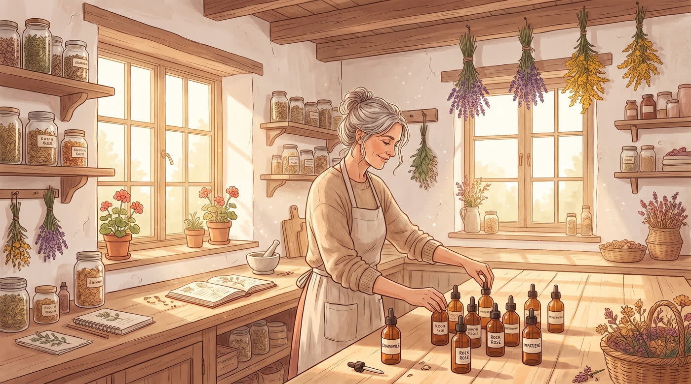

Un rincón que no está en el menú
Bienvenida a mi casa

Este es mi taller de verdad: donde preparo las esencias, donde cuelgo las flores a secar y donde converso conmigo misma antes de conversar contigo. Si llegaste hasta acá con este link, es porque te lo pasé yo — así que ya sabes que esto es entre nosotros.
Gracias por estar cerca. 🌿